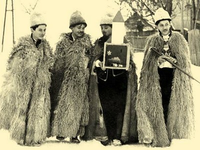
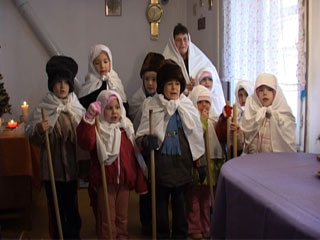
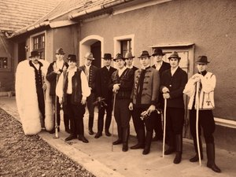

| BETLEHEMEZÉS | LUCÁZÁS | REGÖLÉS |
|
Andrást követõ vasárnapon kezdetét veszi az advent idõszaka, azaz várakozás és felkészülés az Úr eljövetelére. Az ünnepkörhöz a magyar hagyományokban számos hiedelem, babona és népszokás tartozik, ez utóbbiak közül talán a legelterjedtebb a betlehemezés, a lucázás és a regölés volt. Zalában a falvak életében nagy jelentõsége volt az ünnepnek, s ezeket az évszázadok alatt kialakult hagyományos paraszti szokások még emlékezetesebbé tették, arról nem is beszélve, hogy felbecsülhetetlen szellemi értéket hagytak ezzel az utókorra. Érdemes tehát így karácsony közeledtével feleleveníteni a jellegzetes év végi göcseji és hetési szokásokat. Advent elsõ vasárnapjától karácsony „bõjtjének” estéig öt tagból álló 12–15 éves gyerekek betlehemet jártak. Egyikük (az angyal) vitte a templomot, ami papírból, fából vagy agyagból készült. A betlehemesek házról-házra jártak, s megkérdezték, hogy szabad-e a betlehemet bevinni, ezt a „rendes” házakban megengedték. A betlehemjárás részben egyházi, részben világi dallamokból álló, színjátékszerû pásztorjáték. A középkorban a templomban zajlott latin nyelvû szöveggel, csak késõbb „világiasodott el”, s került ki az utcára. Az énekek közötti prózai rész tréfás, nevettetõ, egyáltalán nem egyházi jellegû. Ennek ellenére azonban Gönczi Ferenc szerint sem a játék, sem pedig az ének nem tekinthetõ igazi népköltészetnek, ezért „kevés becsûnek” tartja. |
 |
Luca napján legjellemzõbb szokás a kotyolás. Kora hajnalban, 3-4 óra körül jártak kotyolni a 7–16 éves fiúk. Minden esetben szalmát, vagy fát vittek magukkal, melyre kotyolás közben leültek. A legközelebbi szomszédhoz mentek elõször, „ott a magukkal vitt fát, forgácsot vagy szalmát, a szobaajtó talpa elé vagy a pitvarföldre teszik, s rendesen, minden kérdezés nélkül egyszerre nagyon erõs hangon elkezdik: Lucza, Lucza, kity, koty!” A kotyolók elõl sokszor elzárták a kaput, s „rakoncátlanságuk” miatt mások is éppen csak megtûrték õket. Persze, azt megjegyezték, hol nem nyertek bebocsájtást, mert utána valahogy mindig megbosszulták a házigazda bûnét. A kotyolás versének több változata van, a dallama pedig egyszerû, monoton. 1. Lucza, Lucza, kitty-kotty, kitty-kotty, Kalamonya kettü, kettü, kettü, Mind a kettü meddü, meddü. 2. Kijetek liányának akkora csöcsi legyen, Mind eb bugyigáskorsu, korsu, korsu! 3. Kijetek disznajánok akkora szalánnájo legyen, Mind a zajtu, ajtu, ajtu! (...) 6. Szállon Isten házunkra, hat szekirre, Hat luóve, kilencz borgyu tehinne! Szent Juób, Szent Iján, Három angyal áll. (Páka) |
 |
A kotyolás elvégzése után a szobába mennek, s kenyeret, kalácsot, pálinkát, gyümölcsöt, kétfillérest kapnak. A fát és a szalmát, amin a fiatalok kotyolnak, a gazda igyekszik megtartani magának, mert különben a „tyúkok haszna elmenne”. Azt tartják, hogy amely gazda házában nem enged lucázni, házában a tyúkok nem tojnak. Ha az asszony Luca napján sokat jár, tyúkjai abban az évben nem tojnak.
Luca asszony megköveteli, hogy az õ napját tényleg megünnepeljék, mert a mondás úgy tartja, ha valaki e napon fon, annak keze egész évben szenved, ha valaki párol valamit, akkor azt Luca „csúffá” teszi. Luca napján nem szabad fehérnépnek a szomszédba menni, mert a meglátogatottnál a szerszámok (fejsze, szekerce, ásó stb.) nyelébe vert ékek nem tartanak, s a tyúkok nem ülik meg a fészket.
E napon annyi kukoricapogácsát sütöttek, ahány tagú volt a család. Sütés elõtt a pogácsákat megjelölték, belsejükbe tollat tettek. Úgy hitték, hogy akinek a tolla a kemencében megperzselõdött, az a következõ évben meghal.
Ekkor állnak neki a lucaszék készítésének is, melynek a karácsonyi éjféli misén van nagy szerepe, hiszen aki arra felállt, az megláthatta, hogy ki a boszorkány. A széket 13 napig kellett titokban, a család tudta nélkül készíteni, 13 fából, melyet 13 helyrõl szedtek össze. A széket az éjféli mise után általában elégették, hogy a boszorkányok ne férhessenek hozzá. Gönczi már utal arra, hogy lucaszéket mostanában, azaz az 1900-as évek elején már nem nagyon készítettek. Elõfordult az is, hogy a pap leszállította a gazdát a székrõl mise közben, mondván „itt ne komédiázzon”.
Egyes kutatók szerint a regölés szokása Göcsejben alakult ki, innen terjedt el. Karácsony estéjén, illetõleg Szent István elõestéjén jártak „regünyi”. Söjtörön már karácsony elõtt két-három héttel kezdték, s karácsony másodnapjáig gyakorolták. Pusztamagyaródon karácsony másnapján, hajnalban regöltek. A szokás árpád-kori énekmondóink, az úgynevezett regösök után maradt fenn. Egyes kutatók szerint a regölés a XI. század legelején keletkezett, az augsburgi menekültektõl származott. A regösök, míg Szent István király figyelme rájuk nem irányult, kóborló, pogány hagyományokat ápoló vándor énekesek voltak, kiket a nép ördöngösöknek tartott. A regölés tehát régi pogány szokás maradványa, bõségvarázsló és párokat összebûvölõ mûvelet. A téli napforduló ünnepének emléke. |
 |
Karácsony este 15–20 éves fiúk, bandába verõdve, maskarába öltözve, csörgõ láncokkal, botokkal felszerelkezve, házról-házra jártak, s énekelve kívántak a házbelieknek boldog új esztendõt. Söjtörön hárman-négyen alkottak egy csoportot, kifele fordított bundában, szõrkucsmában jártak regölni. Felszerelésük tarisznyából és láncos botból állt, amit éneklés közben a földhöz ütögettek. Legszívesebben olyan házakba tértek be, ahol felnõtt lányok voltak, kiket a legényekkel „összeregöltek”.
Mikor a regösök egy-egy házba bekopogtak, megkérdezték, hogy „szabad- e regünyi?” Mikor engedélyt kaptak, kérésüket mondókával is megismételték: „Megjöttek szegény Szent István szolgái a messze havas országból. Kinek füle, kinek keze fagyott le a nagy hidegben. A kietek adományából akarjuk meggyógyítani.” Ezt követte a regösének, mely jókívánságokat tartalmazott. Rozsot, zabot, bükkönyt, jószágokat és jó termést kívántak:
Aggyon a zuristen Ennek a gazdaasszonnak El lud allát Száz zsiba fiját, Ezer mennyi számát! Haj regü rejtem” (Milejszeg)
Énekük befejeztével a regösök alamizsnát kaptak. Az összegyûjtött bort, diót, gyümölcsöt, szalonnát többnyire a kocsmában fogyasztották el. Azt a földet, melyet a regösök éneklés közben a bottal felvertek, a „ház népe” összegyûjtötte és gabonával keverte össze. Egyik felét a tyúkoknak adták, hogy jó tojók legyenek a következõ évben, másik felét pedig a vetõmag közé keverték, hogy bõ termés legyen. A regösök Szentliszón búcsúzáskor a ház gerendáit is megveregették, hogy áldás szálljon a házra.
{kind=link}
{kind=link}